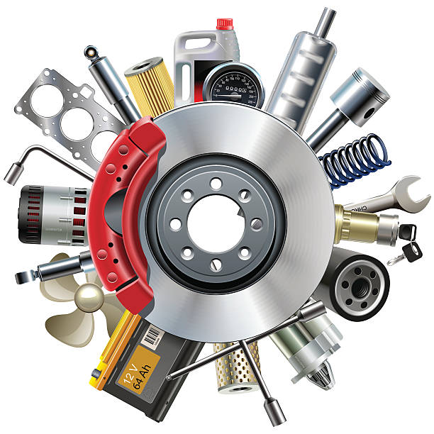

Cursos Disponibles

Bachillerato General
Duración: 3 años
El bachillerato técnico, dentro del Bachillerato General Unificado, proporciona una formación complementaria en áreas técnicas específicas, como agropecuarias, industriales, de servicios, artesanales, deportivas o artísticas.
📘 Apartar Cupo
Bachillerato Técnico Contable
Duración: 3 años
En este curso les enseñaremos a como poder registrar, clasificar y procesar la información financiera de una empresa.
📘 Apartar CupoAtencion Primaria en Salud
Duración: 3 años
En este curso de bienestar y salud les enseñaremos a ayuda a las personas a alcanzar sus objetivos de salud y bienestar a través de la orientación, el apoyo y la motivación para realizar cambios positivos en su estilo de vida.
📘 Apartar Cupo
Técnico en Electicidad
Duración: 3 años
El tecnico en electicidad se encarga de instalar, mantener y reparar sistemas eléctricos en diversos entornos, como edificios residenciales, comerciales e industriales.
📘 Apartar Cupo
Desarrollo en Software
Duración: 3 años
En este curso de Desarrollo de software le enseñaremos a construir, probar y mantener software, incluyendo diseño, codificación, depuración y optimización de aplicaciones y sistemas.
📘 Apartar CupoLogistica y Aduanas
Duración: 3 años
El curso de Logistica y Aduanas se encarga de la gestión eficiente del flujo de bienes y mercancías, desde su origen hasta su destino, asegurando el cumplimiento de las normativas aduaneras y optimizando los procesos para reducir costos y plazos.
📘 Apartar Cupo
Mecanica Automotriz
Duración: 3 años
En el curso de mecanica automotriz te enseñaremos a mantener y reparar vehículos, diagnosticando problemas y realizando las tareas necesarias para asegurar su correcto funcionamiento.
📘 Apartar CupoMecanica Industrial
Duración: 3 años
El curso de mecanica industrial se encarga del mantenimiento, reparación y fabricación de maquinaria y sistemas mecánicos utilizados en la industria.
📘 Apartar Cupo